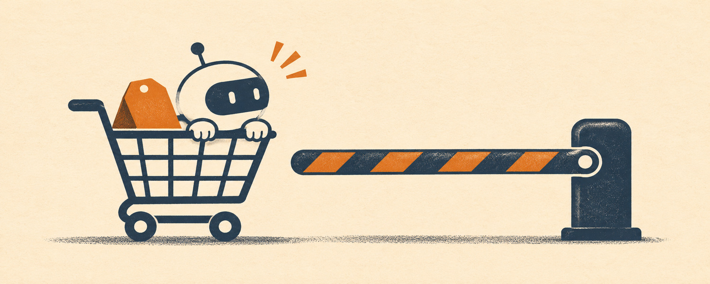
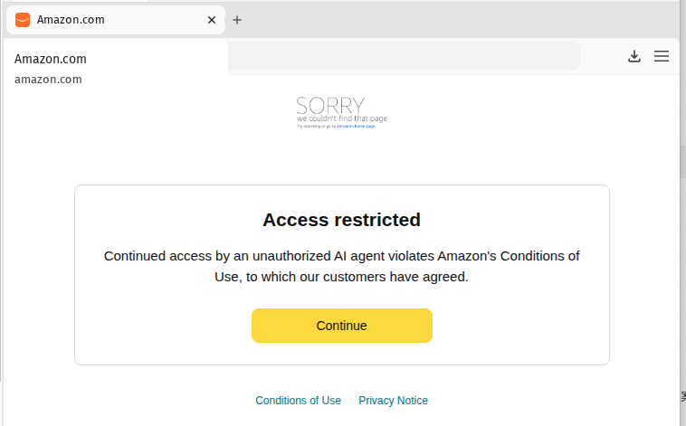

This Black Friday, I’ve been asking Muse to compare prices and tell me which deals are worth it. Sometimes I have it add something to my cart. I still check out myself. Muse got me prices at Walmart and Target. When I asked it to open an Amazon product page, all I got was “Access restricted.”

The message on Amazon’s page called it an “unauthorized AI agent.”
On other sites I sometimes run into that little “I’m not a robot” box. A checkbox seems like an awfully easy assignment for an agent. Give me one of those traffic-light grids, though, and I’ll hesitate over the tiny sliver in the corner. I bet my agent would pick the right square before I would!
If Muse and I open the same product page, how can Amazon tell who clicked?
I asked Codex to visit Amazon’s homepage. Here’s an excerpt from that request.
GET / HTTP/1.1
Host: www.amazon.com
User-Agent: curl/8.14.1 Agent/CodexUser-Agent is a field the software making a request uses to describe itself. Amazon requires agents to include Agent/name in every HTTP or HTTPS request to its services, starting with the very first one. I asked curl to add Agent/Codex here. As for Muse, the message alone doesn’t tell me what triggered the block or even whether Amazon identified Muse specifically. Amazon’s Conditions of Use · Agents §3
On September 20, Amazon confirmed to tech publication GeekWire that it had blocked requests from Muse to shop on customers’ behalf. Amazon said Muse hadn’t identified itself while browsing. GeekWire’s report and Amazon’s statement

Jonathan Wegener shared a similar message. The screenshot above shows his post as it appeared in Business Insider. Wegener’s post and photo on X · Business Insider’s report
In mid-October, a Grok Bot user shared a screenshot of Amazon blocking an order. Elon Musk reposted it and suggested sending Grok elsewhere to find a better deal. Later, someone asked about building an X Shop. Musk replied, “Maybe we should start a competitor to Amazon 🤔”.
Musk on shopping elsewhere · His reply about an Amazon competitor · Archived post
Can Amazon recognize an agent that doesn’t give its name?
An agent can leave its name out. Amazon might still recognize it. When Amazon sued Perplexity in November 2025, the complaint described one example.
Comet is Perplexity’s browser. Its built-in Comet Assistant can click through websites for you. Amazon alleged that even after it asked Perplexity to stop, the agent continued accessing customer accounts that required a login.

In November 2025, Forbes covered Amazon’s demand that Perplexity stop letting Comet’s agent shop on its customers’ behalf. Forbes coverage
According to Amazon’s complaint, Comet’s agent sent the same User-Agent as ordinary Chrome. Amazon said its engineers analyzed network traffic and browser data and found a set of characteristics that distinguished Comet’s actions from a customer browsing in person. Amazon called this a “browser fingerprint” without specifying the individual signals.
So who actually got blocked? Amazon said it sometimes blocked the customer’s account and had to unblock it when the person came back to shop. According to Amazon, if Comet had identified itself in the User-Agent, Amazon could have blocked just the agent’s requests.
On August 4, 2026, the appeals court vacated the preliminary injunction and sent the case back for further proceedings.
Perplexity’s guide to Comet · Amazon’s complaint, paragraphs 34, 38 and 62 · Appeals court decision
Will Amazon, Walmart and Target let an agent shop for me?
I use Muse and Grok Bot, so those are the two I looked at.
| Store | Muse | Grok Bot |
|---|---|---|
| Amazon | I was blocked | A user’s order was blocked |
| Walmart | Official integration | I got a price |
| Target | I got a price | I got a price |
Target’s terms list its approved shopping agents: Target’s own AI Shopping Assistant, OAI, Google and Microsoft. Muse and Grok Bot both gave me Target prices, but neither appears on that list. A price alone doesn’t tell me where they got it or establish that Target has integrated either product.
Walmart’s November 24 Muse announcement · Target’s terms on agentic commerce and delegated access · Grok Bot user’s screenshot · Walmart’s agent access terms
When does Walmart ask an agent to identify itself?
Walmart’s general terms say an agent must provide its product name, version and company information when Walmart asks. Amazon’s terms specify the User-Agent on every request.
Walmart has integrated Muse, Meta’s personal AI agent. Say I ask Muse for a TV under $500. It can search through Walmart’s interface. The first time I ask it to add an item to my cart, I set up an Agent Profile in my Walmart account, where I can give it a spending limit. Within the rules I set, Walmart can let it check out automatically.
Checkout has another safeguard. The payment token is tied to the merchant, cart, amount and session. My shopping rules can carry over, but each transaction needs a fresh token. Once used, it’s no good for another purchase.
Walmart’s identity requirements (§3), customer authorization (§4) and Gateway appendix
When I buy something, how do Muse and Grok Bot make money?
Someone shared this screenshot of a stroller, and I’ve seen a similar button myself. It made me curious: if I tap “Buy with Muse,” does the merchant pay Muse?

The “Buy with Muse” button.
On its third-quarter earnings call, Meta said it wants most people to be able to use Muse for free. Users could subscribe for access to more advanced models or higher usage limits. Meta plans to charge for transactions Muse helps bring about and expects merchants to pay. Neither company disclosed in these materials whether Walmart paid on a particular order or how much.
Meta’s Q3 2026 earnings call, page 2
Under the new X Subscription plans, Premium and higher tiers include Grok Bot. SpaceX’s third-quarter filing mentions subscription revenue from Grok and X.
Grok Bot subscription tiers · SpaceX’s third-quarter filing
Here’s what I’m curious about. Imagine two stores selling the same thing. One offers my agent a commission. The other is $10 cheaper. When I ask for the lowest price, which store will my agent put first?
Shopping is showing up in AI conversations in China, too. On November 24, LanJing News tried a new Doubao Shopping feature available to some users. You tell Doubao what you want, it finds products, and you place the order on a page provided by Douyin’s e-commerce platform. I haven’t dug into the business model there yet. When someone buys through Doubao, does the merchant pay Doubao a commission?
LanJing News tries Doubao Shopping
Where did my Black Friday money go?
The other day, to make a deal work, Muse went through every possible way to split up my order and figured out which was cheapest. I could’ve hugged it! It saved me time and money. Maybe the saving-money part is what Amazon isn’t so keen on.
I think shopping with agents is going to catch on. This Black Friday, everything I bought came from Walmart and Target.
Walmart talks about Every Day Low Prices. It let my agent do the math to see how much I could save. That lived up to the promise for me.